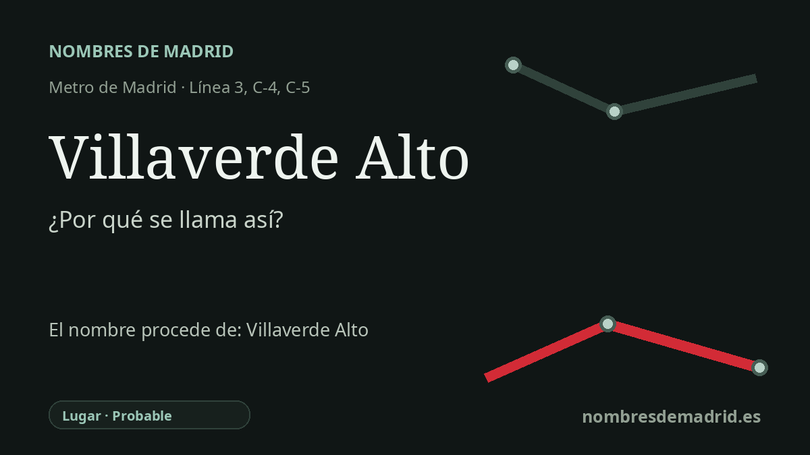

Publicado el · Investigación de Nombres de Madrid · Cómo verificamos cada origen · 10 fuentes consultadas
Respuesta rápida
Villaverde Alto toma su nombre del antiguo núcleo alto de Villaverde, origen del municipio anexionado a Madrid en 1954. El nombre lo contrapone a Villaverde Bajo, el barrio más bajo que creció junto al ferrocarril al otro lado de la antigua carretera de Andalucía.
La historia del nombre
La estación de Villaverde Alto toma su nombre del lugar histórico que la rodea, hoy llamado oficialmente Villaverde Alto, Casco Histórico de Villaverde. No es un nombre conmemorativo: señala el antiguo núcleo alto de Villaverde, el municipio desaparecido que dio nombre al actual distrito madrileño.
La documentación del Ayuntamiento de Madrid describe Villaverde Alto como el núcleo más antiguo de Villaverde y, en su día, origen del municipio. Al integrarse Villaverde en Madrid en 1954, esta zona pasó a llamarse Villaverde Alto en contraposición a Villaverde Bajo, el nuevo barrio situado al otro lado de la antigua carretera de Andalucía, junto a los talleres del ferrocarril.
El topónimo Villaverde parece transparente en español actual, y el elemento verde está respaldado por Toponomasticon Hispaniae dentro de la familia del latín viridis, 'verde'. Aun así, la toponimia madrileña no es tan sencilla: una explicación publicada que cita a Luis Miguel Sánchez Molledo recoge dos posibilidades, el verdor del entorno o una relación con el antiguo Santiago el Verde, junto al Manzanares. El vocablo aparece documentado desde el siglo XV, de modo que la motivación medieval exacta no se deduce por completo del nombre moderno.
La historia del transporte refuerza el topónimo, no lo crea. Villaverde Alto es un intercambiador con las líneas C-4 y C-5 de Cercanías, y la línea 3 de Metro llegó allí con la gran ampliación hacia el sur inaugurada el 21 de abril de 2007. El ferrocarril atrajo industria a Villaverde, y el distrito quedó muy asociado en el siglo XX a las fábricas, incluida la factoría Barreiros, pero ese contexto explica la identidad industrial del barrio más que el origen del nombre de la estación.
La lectura más precisa del nombre es, por tanto, por capas: la estación se llama con seguridad por Villaverde Alto; 'Alto' se explica mejor por la contraposición con Villaverde Bajo tras la anexión de 1954; y Villaverde probablemente se relaciona con verde/viridis, aunque la tradición de Santiago el Verde sigue formando parte de la discusión toponímica local. El barrio administrativo, antes San Andrés, fue renombrado como Villaverde Alto, Casco Histórico de Villaverde por acuerdo del Pleno del Ayuntamiento de Madrid de 31 de octubre de 2017, lo que confirmó oficialmente el topónimo histórico.